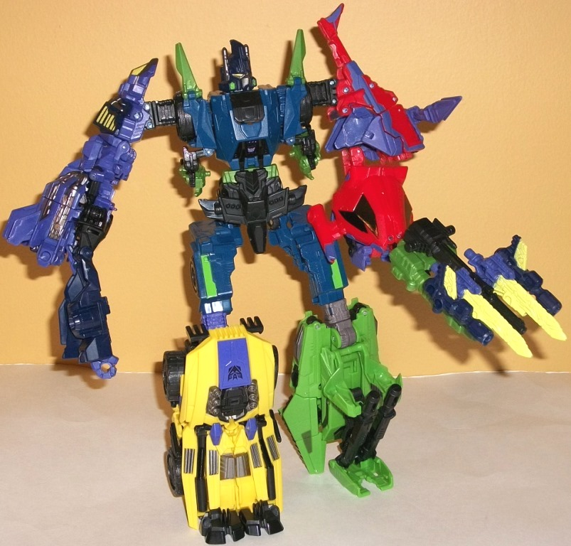
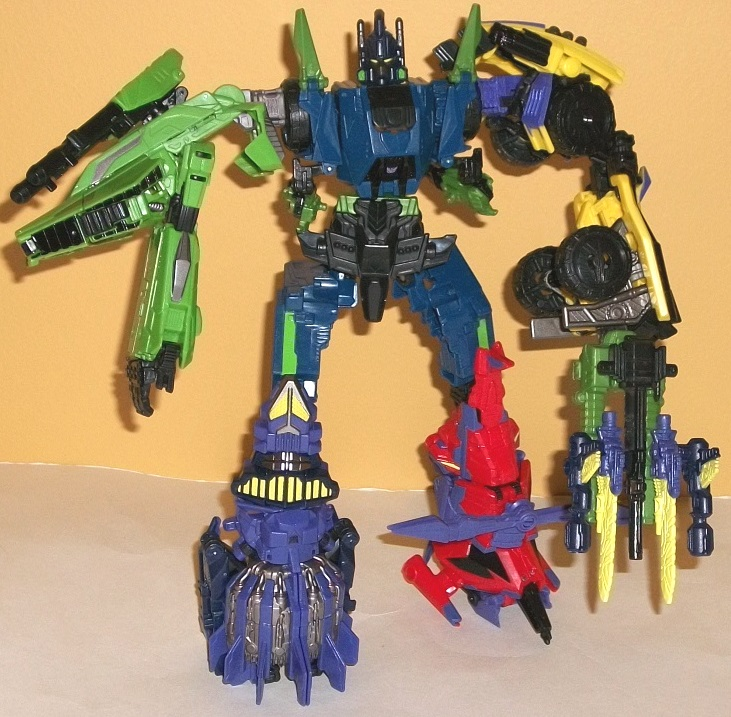
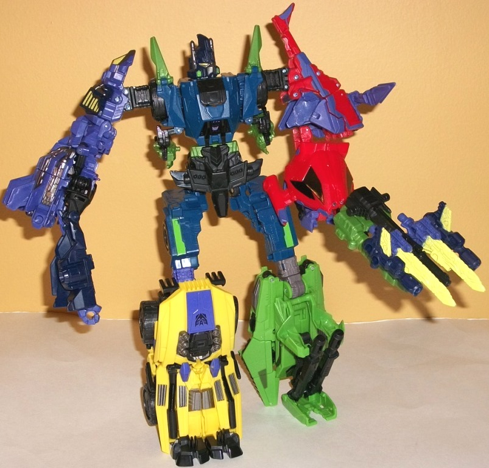
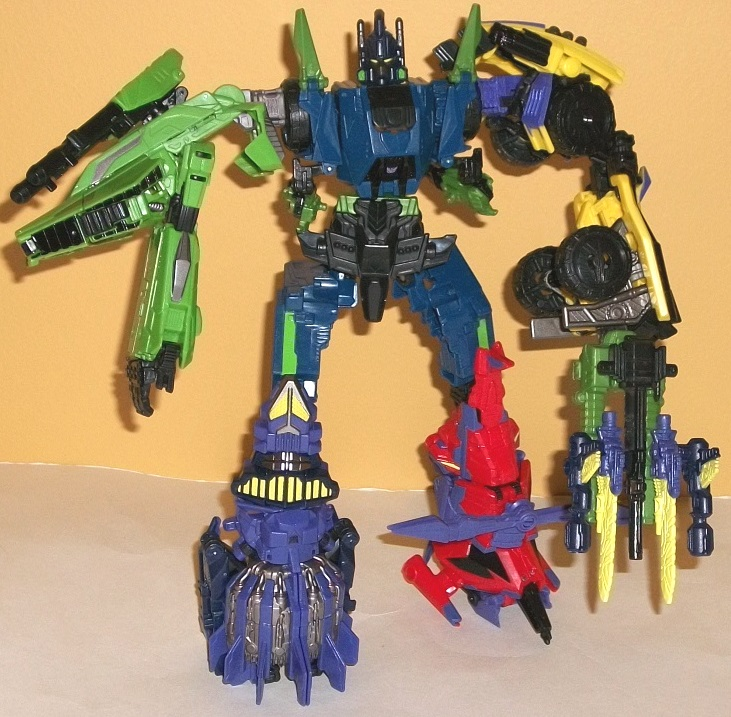

 
Difficulty of Transformation : Hard
Rating : 6.4
Onslaught's vehicle mode
is... well, it's SUPPOSED to be a heavy-duty four-wheeled futuristic combat
truck. And I guess it... kinda?... still is, but MAN, this mode took the
severest of beatings when converting the game model into a toy that not
only has to match the deluxe budget price point, but also has to form a
combiner torso. Thus, I tried to cut the mold a lot of slack when I first
got it out of the package and fiddled with it... but there's VERY few positives
to look at in this mode. One positive is the color scheme; it might not
be quite game-accurate, but it looks good and, like the other mass-release
FoC Combaticons, homages his Energon Bruticus Maximus "counterpart"
Barricade
.
The combination of light green and dark bluish green really works well,
with just the right amount of both colors visible in this mode. The black
serves as a nice neutral color, and a few other parts-- such as his dual-cannon
weapon-- are a darker, duller shade of green. This particular color doesn't
go as well with the others, and I would've preferred it be a bit brighter
considering how the rest of the mass-release Combaticons look, but it's
certainly not bad. Also, from a direct frontal view, this mode doesn't
look that bad-- they nailed the unique shape of FoC Onslaught's front grill
and large covers on his wheels. However, that's pretty much only where
this vehicle mode ends up looking good. At ANY other angle, it looks horribly
incomplete and is a very poor disguise for the bunch of parts seen in the
middle of the toy, such as Onslaught's arms, Bruticus' head, and the combiner
pelvis plate, which are all in quite plain view. He also has no back half
of the vehicle mode, it just being a huge hollow gap between the two sides
that house his wheels. His front two wheels also have a rather unsightly
square peg sticking out of them for the torso mode. His dual-gun accessory
also tends to clip in at an angle, and is always facing slightly downwards
(and no, you can't move it at all in this mode)-- it definitely looks off
here. There's large black hinge pieces to the side of the main "grill/chest
section" that are a bit unsightly as well. So... yeah. This is a pretty
terrible alt mode, particularly when you compare it to the source material
and how solid his alt mode looked there.
Onslaught's robot mode
suffers a lot less than his vehicle mode, but it still suffers. My main
issue is just how skinny and.... un-Onslaught like his appendages are,
his arms in particular-- they're too skiny, and given how much of a muscular
beefcake Onslaught's been depicted as (particularly with this version),
it ends up making him look a LOT less imposing than he should be. There's
also an unsightly cover plate hanging out just behind his head, and an
even more unsightly combiner crotch piece hanging behind his butt. As I
said before, though, his chest looks pretty decent, as do his waist and
upper legs. There's a pretty decent amount of semi-futuristic FoC-esque
mold detailing on several parts as well, and he's definitely not lacking
there. A few more paint apps on his legs or face wouldn't have hurt, though--
the yellow visor is a nice touch on his great facesculpt, but the other
details don't stand out much due to the head being black plastic. For articulation,
Onslaught can move at the neck, shoulders, elbows (at two points), waist,
hips (at three points), and knees. His shoulder articulation is a bit too
restricted due to his transformation, and his combiner crotchpiece can
get in the way of hip movement a bit, but other than that he doesn't really
suffer in that respect. (His waist articulation is also at an odd angle,
so if you turn him too far one way it looks weird.) Onslaught can hold
his double-barreled cannon in either hand in this mode, and it fits rather
snugly-- you unfortunately can't plug it into his back, though, as the
Bruticus head back there gets in the way.
Onslaught forms the
torso, upper legs, and head of Bruticus.
FoC Onslaught is not
only the worst of the FoC Combaticon molds, but the worst of the deluxe
FoC molds period. His robot mode is... decent, I guess, but way too skinny,
and his vehicle mode is astoundingly bad and incomplete, even keeping in
mind the restrictions the designers were under. He's necessary if you want
to form FoC Bruticus, but that's the only reason I'd get this awful mold.
 Decepticon
Bruticus (Fall of Cybertron) [Combination of Onslaught, Vortex, Blast Off,
Swindle, and Decepticon Brawl)
Decepticon
Bruticus (Fall of Cybertron) [Combination of Onslaught, Vortex, Blast Off,
Swindle, and Decepticon Brawl)


Difficulty of Transformation
: Hard
Rating
: 6.4
Since Bruticus' limb-bots
can form either an arm or a leg, his look can change a little depending
upon whom you've got as which appendage. I'll review the "default" configuration
mentioned in his instructions first, then look at how those who were his
legs in this configuration look as arms and visa versa. First, though,
the core body-- Onslaught-- stays the same no matter what configuration
you put the other limbs in, and that's unfortunate because Onslaught's
part just does not look nearly buff enough to be Bruticus' mid-section.
The overall details are there-- the chest and head look pretty good and
well-sculpted, though his chest could stand to be a bit wider. Where Onslaught
really fails as the midsection is as the waist and upper legs-- the waist
is way too skinny, and the lower legs are only slightly better, still being
too
spindly compared to the lower legs. The shoulder pieces also look rather
weak, being far too skinny-looking, and the "spikes" above the wheels are
pretty flimsy-looking, honestly. They also rotate much more easily than
the actual shoulder-arm connection joint, which means when you intend to
rotate Bruticus' arm forward often you'l rotate this piece forward by mistake
first, which is a bit annoying. Onslaught's robot arms are pretty blatantly
hanging below the shoulders, to boot. On the plus side, his configuration
means that Bruticus actually has waist articulation, as well as the expected
side-to-side neck movement. Onslaught's dual cannons can be pegged in behind
Bruticus' upper back to give the gestalt that iconic G1 look in this respect,
though if you do that, you can't form Bruticus' "gestalt weapon"-- all
of the Combaticons' individual weapons combined in a weapon that looks...
halfway decent, but I would've preferred a more solid-looking weapon, myself.
It's too obvious that it's made up of incongrous smaller weapons to the
point where the official configuration looks a bit like a "fan mode".
As for the limbs, in
the default configuration
Vortex
and
Blast
Off
form the arms, and
Brawl
and
Swindle
the legs. The connection points all clamp together very solidly, so no
issues there (they aren't SO solid that you can't force them apart at the
connection points for disassembly, either). The colors are all over the
place, but they usually are on gestalts. None of the colors outright clash
with the others, though, and using a few colors throughout all of the members--
such as black and purple-- help to unify them a bit. Vortex forms a pretty
decent arm-- you basically elongate the mid-section of the copter mode
and swap out the front-mounted cannon for a hand. The gap in the middle
is a tad unsightly, but otherwise this looks nice. He can move at the shoulder
(at two points), elbow, and at the bast of the base of the wrist. Blast
Off, on the other hand, looks atrocious as an arm-- you unfold his robot
arms from underneath the shuttle mode and then fold and compress them together.
This gives Bruticus basically no shoulder, but even worse a reeeeally overly
long gorilla-like arm with a proportionally small fist-- this is just...
ugh. So ugly. His articulation is at the shoulder (at three points) and
two points on the mid-arm. Swindle is the least-changed, as you basically
fold out his robot feet, stand him up, and then fold out the combiner port.
It's obviously a vehicle, but it also makes a pretty solid foot. He can
move at the knee joint at two points. As for Brawl, I love the way his
turret splits, folds downwards, and hooks into his dual cannons to keep
the foot stable, and also serves as a pretty decent leg by himself. Brawl
can move at the knee joint at two points and a bit at the ankle.
Now, for the limb swaps.
As an arm, Swindle is pretty unstable structurally, with not nearly enough
parts (like his robot arms) pegging into place. You basically elongate
his vehicle mode and flip out a hand-- which makes his lower arm more bulky
than it should be, but it also gives Bruticus a pretty substantial shoulder
and a pretty decent amount of movement. The Swindle arm can move at the
shoulder at two points, at the elbow at two points, and inwards at the
wrist. In Brawl's arm mode, you rotate down the robot legs from the tank
mode, flip out the fingers, and then connect said legs. This makes the
shoulder of this mode VERY long and wide indeed, and the arm length is
much better than, say, Blast Off's, though it's not as beefy. Brawl's relevant
toe folds down to become the thumb of the hand, which I find ingenious.
Brawl's arm mode can move at the shoulder at three points and at the thumb--
sorry, but no elbow movement for this mode. Blast Off's leg mode is VERY
straightforward, being his shuttle mode with the wings folded inwards to
enhance stability. As such, it makes for a pretty solid leg, though I wish
he had a bit more of a visible "foot" in this configuration. The Blast
Off leg can move at two points at the knee. Vortex's leg mode also looks
more or less like his helicopter mode, but with the front section at an
angle to the rest of the helicopter body so that it forms the foot, essentially.
This leg mode doesn't have much of a heel for the foot, though, so it's
the least stable of the various limbs' foot modes in terms of keeping Bruticus
upright. It can move at the knee at two points and has an additional point
of movement slightly above where the ankle would be, more as a side effect
of the transformation than anything else.
As much as I'd like
to say otherwise, FoC Bruticus is a pretty weak gestalt. The main offender
is Onslaught's horribly slim, gangly, malproportioned torso mode-- he really
should've been a voyager. All of the limb-bots have at least one good mode,
but a few modes-- like Blast Off's arm mode, for example-- are atrociously
bad. If you're a huge FoC Combaticon fan or are planning on "upgrading"
the gestalt mode with one of several 3rd Party sets, he's worth putting
into this mode-- but as it is, for the most part I just like to leave my
FoC Combaticons in their individual modes. (The configuration that I think
looks the best overall is with Brawl and Vortex as the arms and Swindle
and Blast Off as the legs.)
No Stats
Reviews by Beastbot